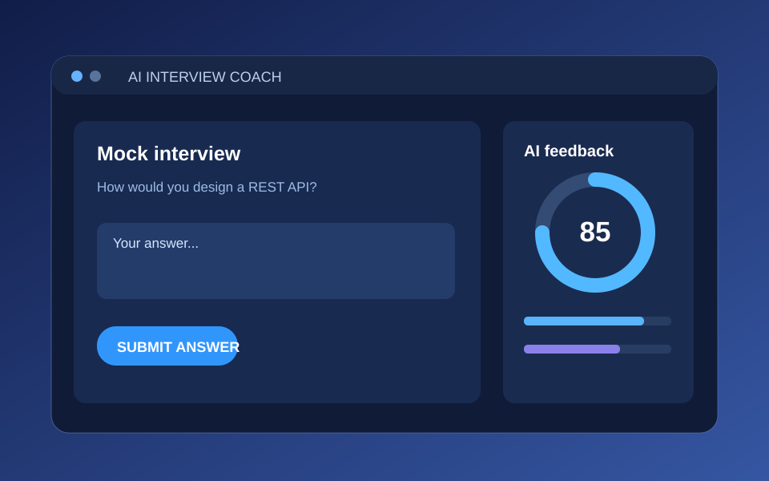
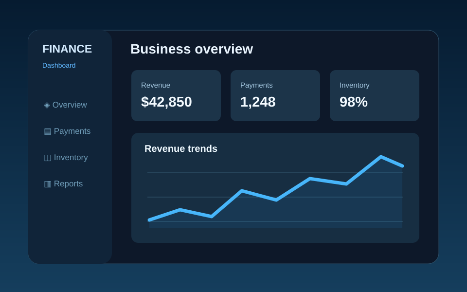

AI Interview Coach
REACT · SPRING BOOT · FASTAPI · RAG
Mock interviews, resume ATS analysis, role-specific question generation and structured AI feedback, with PostgreSQL history.
VIEW SOURCE CODE ↗I build full-stack applications, explore AI and microservices, and love solving problems with clean code. Welcome to my projects and engineering journal.
01 / ABOUT ME
Hi, I'm Akshita Katyal, a final-year B.Tech Computer Science and Engineering student at Vellore Institute of Technology (VIT), Bhopal, graduating in May 2027 (expected).
I enjoy building full-stack products and AI-powered applications with Java, Spring Boot, Python, FastAPI, React and PostgreSQL. I'm interested in scalable REST APIs, retrieval-augmented generation and hands-on problem solving.
02 / SELECTED WORK
Two full-stack applications spanning AI-assisted learning and business analytics.

REACT · SPRING BOOT · FASTAPI · RAG
Mock interviews, resume ATS analysis, role-specific question generation and structured AI feedback, with PostgreSQL history.
VIEW SOURCE CODE ↗
NODE.JS · EXPRESS · MONGODB · CHART.JS
A small-business overview of payments, inventory and revenue, including automated status tracking and interactive charts.
VIEW SOURCE CODE ↗03 / THE JOURNAL
Project walkthroughs and technical notes based on the technologies and work in my resume.
Try another search or choose a different category.
04 / TECH STACK
Java, Python, JavaScript (ES6), SQL, HTML5, CSS3, React.js, Bootstrap, Chart.js and Recharts.
Spring Boot, FastAPI, Node.js, Express.js, REST APIs, microservices, JWT, PostgreSQL and MongoDB.
RAG, LLMs, Gemini API, FAISS, Sentence-Transformers, Git, GitHub, Postman, Linux, Vite and Maven.
EDUCATION
B.Tech, Computer Science & Engineering · Bhopal
CGPA: 8.46/10 · Expected May 2027
Class XII: 84% · Class X: 92% · 2023
CERTIFICATIONS
AWS Skill Builder: Cloud Practitioner Essentials, Technical Essentials, CLF-C02 Practice Questions
ServiceNow: Agentic AI, Automated Test Framework (ATF)
NPTEL: Introduction to Machine Learning, Market Analytics
Coursera: Bits and Bytes of Computer Networking
BEYOND THE CODE
Adobe Hackathon, Myntra We For She Hackathon and college hackathons.
VITBMUN and school MUN participation; formerly zonal head of a school singing group.
LeetCode problem-solving practice and Algo University Graph and Dynamic Programming camps.
05 / SAY HELLO
Open to software engineering opportunities, technical collaborations and interesting conversations. Feel free to reach out.
akkatyal05@gmail.com ↗Bhopal, Madhya Pradesh, India · +91 83830 49570